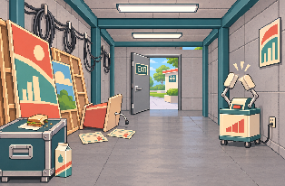
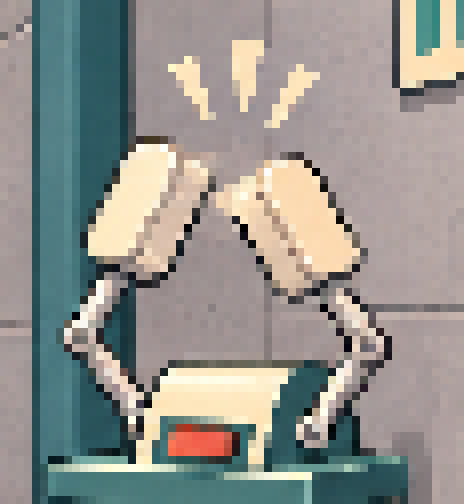
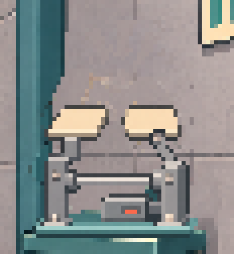
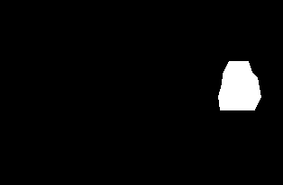
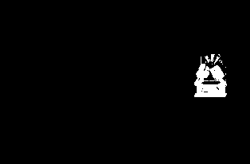
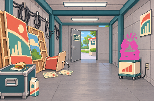

Native-size comparison — 314×206 each


Exact 4× nearest-neighbor previews


Mechanism — exact 8× detail


Mask and changed pixels
White = allowed/changed. The effective mask is confined to the predeclared mask; all changes outside it are zero. Existing wall/post pixels are retained except where the old machinery must be removed.



{
"allowedPixels": 2132,
"effectiveMaskPixels": 1287,
"changedPixels": 1287,
"outsideAllowedMaskChanged": 0,
"outsideEffectiveMaskChanged": 0,
"preservedPixels": 63397,
"changedBounds": [
244,
68,
285,
122
],
"cabinetBaseAndCasterRows122Through205Unchanged": true,
"originalSha256": "ea18247e0564c459c5573a10e2bf8d7dee9e713c8f27d3e6b095eb5df857d11f",
"correctedSha256": "aa90896023a59454887e9b3bd5b1745cb8b95a5d9737829119abddd9176f4889",
"maskSha256": "09ea806000ae75f58eb0935ad932a471247d231759e0b61dd17c4a4fcbbf0ece",
"effectiveMaskSha256": "5a0d79a336eca981181b2ca7f8a1c0179e852a96fbfeb65388278d59f9e8add1"
}Generation, prompt and derivation provenance
Object-layer prompt · Local clean-plate prompt · All generator attempts and hashes · Object-layer original · Local clean-plate original · Reproducible composition/export operations